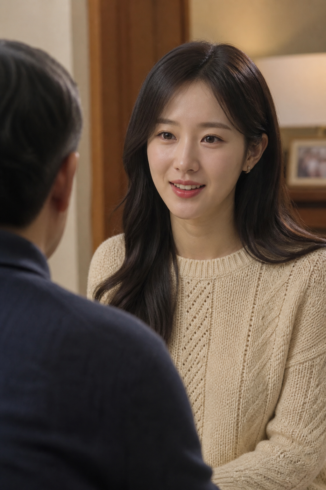
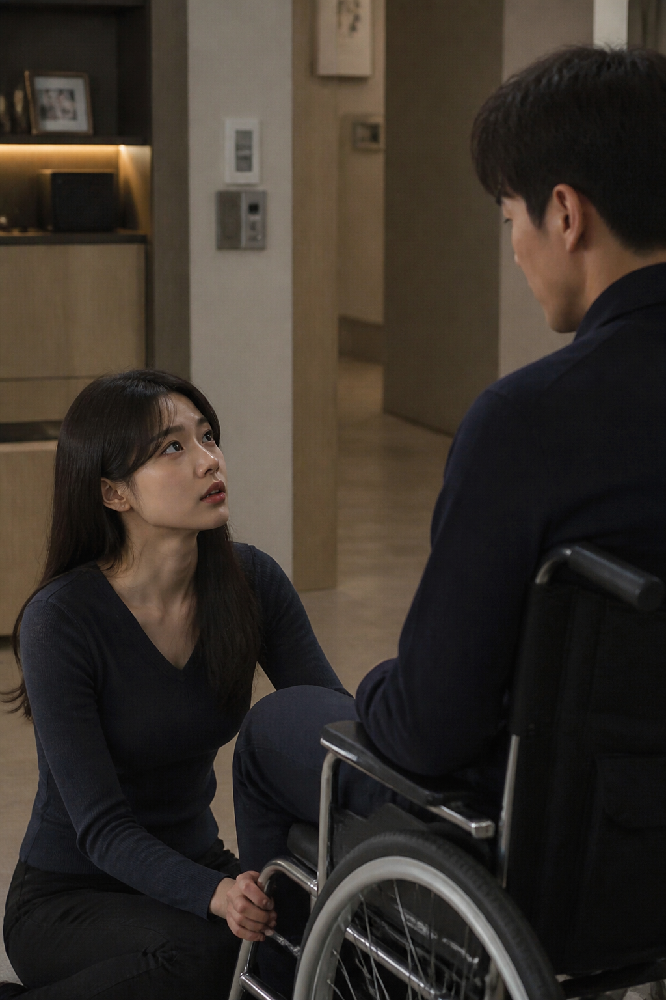
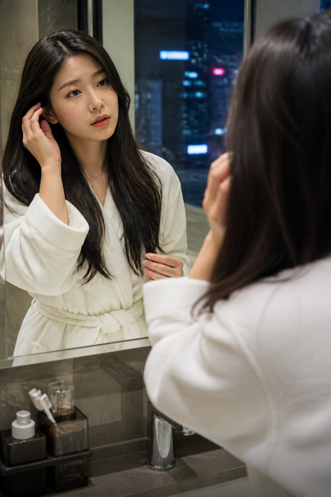
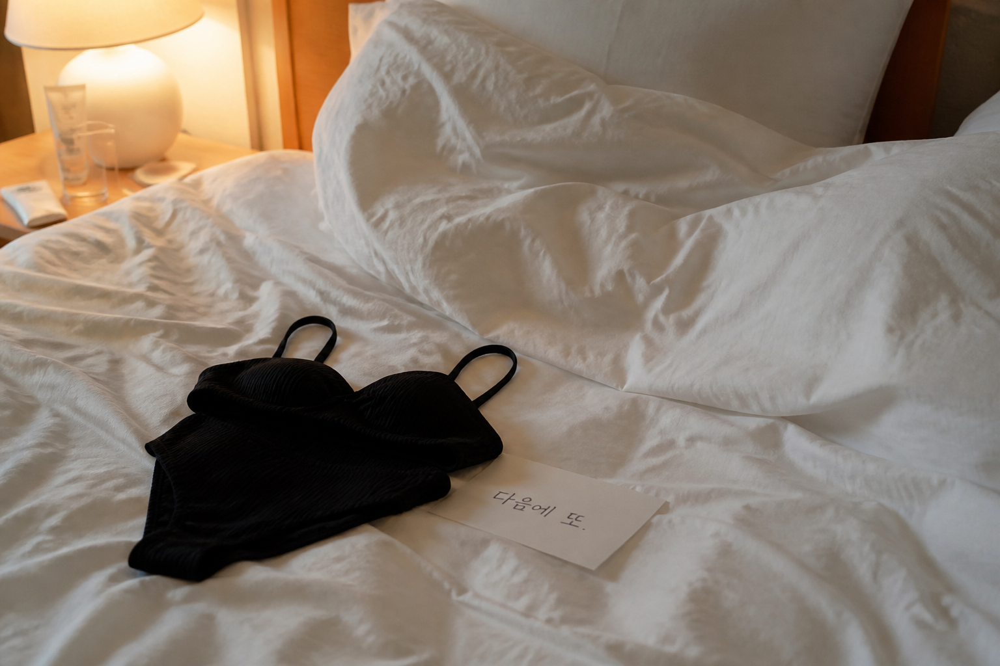

처음엔 그저 경험이라고 생각했다.
지금은… 모르는 사이에 익숙해지고 있는 것 같다.
누군가의 봄
EP.8 조금씩, 선이 흐려진다
지금은… 모르는 사이에 익숙해지고 있는 것 같다.
1. 다시 만난 고객

어색함이 많이 사라졌다. 시선도, 말도, 이제 가깝게 느껴진다.
2. 자연스러운 스킨십
처음엔 피했던 몸의 거리가, 이제는 받아들여진다. 손이 낯설지만은 않다.
3. 더 깊어진 분위기
손이 조금 더 대담해져도, 거부가 없었다. 오히려 기다리고 있었던 것 같다.
4. 휠체어에서

처음엔 망설였다. 지금은 그의 상황을 자연스럽게 받아들인다. 그가 편하면, 나도 괜찮다.
5. 호텔에서
이제는 내가 먼저 맞춘다. 어느 순간부터 그게 자연스러워졌다.
6. 그가 좋아하는 것
처음엔 놀라던 것들이 익숙해진다. 그가 편해 보이면, 나도 더 신경이 쓰인다.
7. 끝난 후
끝나고 남는 공허함이, 나쁘지만은 않다. 조금은… 즐겨도 되는 걸까.
8. 일상으로

거울 속 내가 조금 달라 보인다. 낯설다. 그런데 미워할 수는 없다.
9. 또 다른 고객
질문은 이제 익숙하다. 상대가 원하는 것을 읽는 일이 어렵지 않다.
10. 혼자 있는 밤
하루가 끝났다. 몸은 피곤한데 머리는 복잡하다. 그래도… 조금은, 나쁘지 않다.
11. 다음을 준비하며

입을 옷과 준비할 것을 이제는 안다. 다음엔… 누가 올까.
12. 조금씩 변해가는 나
누군가의 특별한 시간이 되는 일. 처음엔 일이었는데, 나도 조금 변하고 있다. 이 변화가 두렵지 않다. 어쩌면 나는 이미, 누군가의 봄이다.